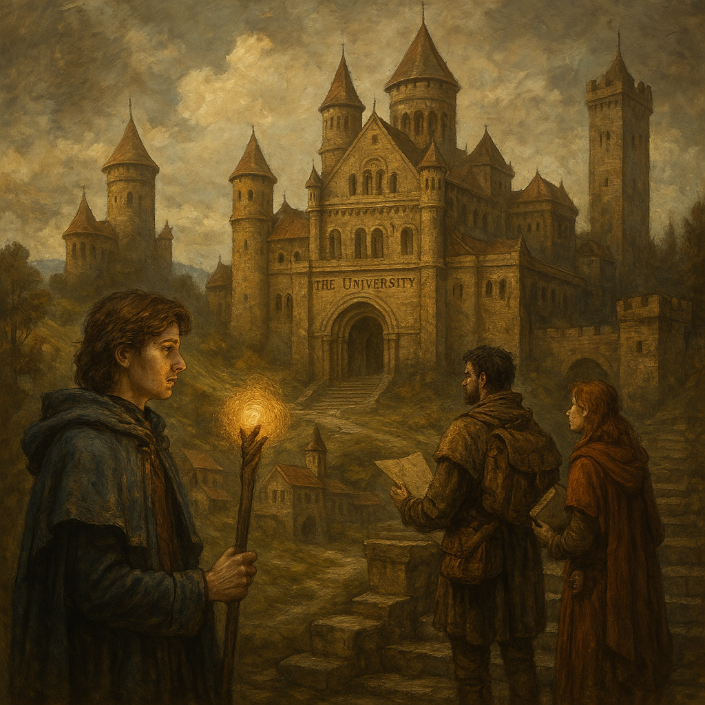

Chapter 4: Knowledge Unbound
Hand of the Lich


Hand of the Lich
15051.05.03
日落前，冒險者們來到了大學城的入口。給守衛看了YHWH的學者證後，大家便輕鬆地走入了大學城。
YHWH得知現在大學城的城主為研究帝國歷史的沙蘭・哈特洛，歷史區的區長為研究各種宗教的安德烈亞・戴依，科技區的區長為研究機器人的佩姬・麥戴斯，自然魔法區的區長為研究水魔法的潔琳・阿瓦洛斯，最後，法師魔法區的區長則為研究魔法古籍的珍妮絲・瑞德。
YHWH過去曾來過大學城數次，寄居在他的師父烈焰術士錢德拉博士家。這次他一樣帶著夥伴們，來到錢德拉家門口，發現錢德拉正出遠門修行中。無奈之下，YHWH只好透過自己的火焰魔法，將錢德拉的門打開了。錢德拉家整棟樓被火燃起，然後大家的腦中傳出了「歡迎回家。」的聲響。
錢德拉家的一樓是大廳，二樓是他的研究室和圖書館，三樓是廚房以及陽台，地下室則是他的寢室以及供學徒居住的通鋪。YHWH熟門熟路的帶著大家，然後到三樓煮咖啡和烤麵包。經過了走在死亡邊緣的一整天，大家都累了。YHWH決定到外面打水，回來時，看見了一名貌似學徒的人在錢德拉家門口東張西望。他禮貌性地詢問，那人卻好像很疑惑，不久後便跑走了，讓YHWH也有點擔心。他知道他見過那個人，但並不熟悉。晚上YHWH和喜利・歐喜利在圖書館看了看書，不久後大家便到地下通鋪過夜，YHWH則把睡袋搬到三樓陽台睡去。
15051.05.04
一早，YHWH到中央圓環領取了不少食糧回來。大家決定先去拜訪城主，以免在大學城遇到什麼問題。
在YHWH的帶領下，大家來到中央塔的一樓，拜訪今年的城主，沙蘭・哈特洛。在大家紛紛向城主自我介紹後，城主表示大家看起來都沒問題，可以在大學城好好拜訪，遇上任何問題，找他就可以，也歡迎來找他喝下午茶。
冒險者們走出中央塔，討論著下一步應該先做什麼。這時，喜利・歐喜利和龍恩意識到了附近似乎有個可疑的人正在偷聽他們。龍恩一個箭步，就抓住了躲在角落的鬼祟人影並質問他。那人表示自己聽到他們在討論蘿琳，他來到大學城的目的就是為了救出蘿琳。冒險者們發現他似乎知道些東西，於是找了個巷弄，開始審問他。透過YHWH的魔法，這位名叫伊的人類語氣似乎比較軟了些，他表示自己是麥克嵩人，曾目睹蘿琳從人類變成陶瓷的那一刻。在那之後，他便把自己畢生賺來的積蓄都拿去麥克嵩的小黑屋問關於拯救蘿琳的方法。語句之間，冒險者們意外發現這名伊之前似乎和他們的前夥伴帕拉丁和蘇加魯一起行動過。不過伊對蘿琳的執著似乎讓龍恩對他懷有額外的敵意。
伊也透露給他們自己是名盜賊，觀察了幾天後，趁著守衛交班的時候翻進城牆內。他也表示發現蘿琳的靈魂似乎是被攔截了，而攔截他的人，正式現在歷史區的區長，研究宗教的安德烈亞・戴依。他表示為了拯救蘿琳，他打算潛入安德烈亞的研究室，如果被發現了，把安德烈亞殺死也無所謂。面對這名不受控制的衝動小子，冒險者們十分苦惱。冒險者們試圖強迫他藉由點按月先生的名片，強制傳送回位在麥克嵩的英荻格身邊，但意外的發現不知道是什麼原因，傳送沒能奏效，因此龍恩決定直接將他敲暈。在開始有民眾注意到的情況下，冒險者們趕緊準備出發，波一肩扛起已經昏迷的伊，大家就這樣跟著路人的說明，走到了歷史區安德烈亞研究室的門口。
YHWH敲了敲門，打開門的正是他昨晚看見的那名鬼祟學徒，學徒也嚇了一大跳。他自我介紹是安德烈亞的助理，名叫麥爾文，但自己沒什麼學術能力，只能幫忙做些打雜的事情，像是打掃、整理東西、管理叫來的貨之類。在麥爾文的叮囑下，大家得知安德烈亞十分高傲，在他面前絕對不能表現出自己比他厲害的模樣。語畢，麥爾文讓大家走進安德烈亞的研究室，他則快步溜回地下室的房間。
冒險者們也不清楚安德烈亞人在哪裡，只好慢慢上樓。二樓有股瀰漫在空中的灰色氣體。冒險者們敲了敲左手邊的門，沒有反應。敲了敲右手邊的門，裡面傳來一名男子的聲音，要大家等一下。幾分鐘後，一名兩眼通紅，看起來精神恍惚的男子打了開門，表示自己就是安德烈亞・戴依。大家進入了他空氣非常混濁的辦公室，看見安德烈亞正享受著他的毒品。他也給了大家一大包的「檸檬」讓大家享用。雖然精神恍惚，但冒險者向安德烈亞提出的問題，他都能很好的回答，也幾番跑到隔壁書房拿書借給冒險者們看。研究室內則是一本書也沒有，但留有不少做過宗教儀式的畫記。
冒險者們問起了關於月神教靈魂轉移的儀式，安德烈亞表示自己近年有在研究攔截靈魂的方法，這讓冒險者們的吸引力都被吸住了。經過各種迂迴的詢問，安德烈亞從隔壁拿來了一本書，表示裡面現在就關押了一名被攔截的靈魂。大家馬上就理解到，這很有可能是蘿琳的靈魂。
詢問起如何進行月神教的靈魂轉移儀式，安德烈亞表示需要犧牲一名無辜的靈魂。冒險者們提議用這名剛剛被他們抓住的伊作為祭品，但安德烈亞表示他看起來就不是無辜的，因此不適合。他提到自己的助理麥爾文似乎是個很好的選擇，於是龍恩、米多莉和波便下樓去找麥爾文。喜利・歐喜利對此感到不是很能接受，於是默默的走到研究室外，不想面對這些。
下到一樓，米多莉和波表示自己也不太能接受這樣的事，因此帶著波兩人先到外頭等待，龍恩則到了地下室，和麥爾文表示他的老闆找他，要他上樓去。
門外，米多莉看見一個奇怪的生物剛好經過這裡，那是一名看起來像雪人的生物。雪人自我介紹名叫雪寶，是研究食物歷史的吉拿棒教授的助理，而在他的口中，區長安德烈亞似乎被他們稱為「無菜單料理」。同時，雪寶也表示歷史區平常路上都沒有人，竟然能看到有人出現，令他感到非常意外。面對這說話顛三倒四的生物，米多莉感到十分困惑，波則不知所措，趕緊回到房子內去了。米多莉感應到這生物應該是個魔法生物。米多莉突然想起，這雪人也許是個無辜之人，如果是魔法生物的話，就算被犧牲，再造出來也可以，因此透過魔法，引導雪寶走進了安德烈亞家。
帶著雪寶來到了研究室外，麥爾文正好被扛到桌子上去，而原本在桌子上的伊則被推到了桌下。麥爾文看著雪寶，表示自己有搞砸過安德烈亞交付的任務，自己不是無辜的，但是這名雪人看起來就是無辜的。雪寶感到困惑，他不知道自己面對的到底是什麼。眼看鬧劇停不下來，安德烈亞一把抓起麥爾文，按在桌上，另一手則按在禁錮蘿琳靈魂的書上，念起咒語，接著麥爾文身體僵直，一動也不動。大家看著，心裡想著，按照之前安德烈亞的說明，蘿琳的靈魂，應該是回到自己的軀體去了吧。
米多莉帶著困惑的雪寶走出了安德烈亞家。為了表示自己的感激，雪寶挖起身上一塊雪塊，並掏出了一根甜筒，把雪塊放上去，要米多莉一定要吃，如果不吃的話會被詛咒。語畢，他便離開了，留下傻眼的米多莉。
同時間，喜利・歐喜利到了地下室，試圖打開麥爾文房間的鎖，想打探看看任何有用的資訊，但他的鑰匙似乎打不開。這時米多莉剛好從門外回來，來到地下室，看見喜利・歐喜利。他試著將手上已經溶了一半的冰淇淋塞給喜利・歐喜利，但喜利・歐喜利不想接受這來路不明的東西。眼看冰淇淋快要溶完了，情急之下，米多莉只好趕快把冰淇淋吃完，確保自己不會被下奇怪的詛咒。
冒險者們疑惑著麥爾文的身體怎麼處理，安德烈亞說他的後院可以挖個洞埋起來，於是龍恩便將麥爾文逐漸陶瓷化的身體扛起，另一側則扛起還被綑綁住的伊，打算將他也埋了。其他冒險者們爭論著是否應該把伊給放了，但龍恩沒在犹豫的，將兩個身體扛到後院去，開始挖洞，將伊丟入洞內，然後把陶瓷麥爾文壓在上面。
對於剛剛發生的一切，喜利・歐喜利感到十分低落。讓無辜之人這樣受害，不是他所認可的對的事。要不要繼續和這群冒險者們冒險，他的內心還沒有答案。不顧其他人還在屋內，喜利・歐喜利決定先暫時脫隊。門外，喜利・歐喜利看見一名人形生物向他快步走來，他沒有很想搭理。那名貓人詢問喜利・歐喜利是否知道怎麼去科技區，喜利・歐喜利簡單回話後，便不再理他。貓人眼看得不到完整的答案，於是向此時剛走出來的冒險者們詢問。冒險者們得知他是名叫山田葵的人類，因為碰到一顆被寶石而被詛咒，變成貓人。山田要去科技區尋找他過去的珠寶商師傅安卓尼科斯，或稱安迪，請教。
冒險者們發現喜利・歐喜利不見了，在山田的帶領下，他們追上遠行的喜利・歐喜利。喜利・歐喜利表示自己需要靜一靜，晚上在茜卓博士家見。
冒險者們帶著山田來到科技區，在詢問附近的人後，得知安卓尼科斯的住處。半身人安卓尼科斯花了點時間，才搞清楚這名貓人是他過去的學徒山田。冒險者們也聽見山田的解說，表示自己是和一名過去的夥伴米凱爾・杜卡斯去群找名為「祖祖氣泡」的珠寶時，因為觸碰到了它，才化為貓人，而米凱爾試圖將他丟入山谷，但他卻活了下來。
安卓尼科斯向大家介紹了自己的珠寶收藏，也泡了他稱為茶的透明色熱飲給大家喝。大家向安卓尼科斯詢問了關於科技區的事，決定等等可以去附近找一位名為艾麗克斯的機甲研究者，請教關於米多莉和波機械手臂的事。離開前，山田表示為了表達自己的謝意，之後可以找他或安卓尼科斯鑑定珠寶，不用算錢。安卓尼科斯也拿了一些光澤閃耀的「茶葉」作為禮品送給冒險者們。
離開安卓尼科斯的住處後，大家決定去找似乎就在附近的艾麗克斯。艾麗克斯是個看起來十分強勢的女子，對於說話較為直接的YHWH似乎有些兇惡。
艾麗克斯初步評估金屬手臂的材質很稀有，甚至不需特別保養一樣能維持光澤，不會生鏽。他判斷這樣一隻手臂至少可以賣100枚金幣。艾麗克斯將米多莉的金屬手臂左右扭了一下，手臂很自然的就拆卸下來了，裝在他搬出來的木製模特兒身上，艾麗克斯也將模特兒原本的手臂拆了下來給米多莉可以戴著，多少可以讓身邊少一點異樣的眼光。米多莉決定接受艾麗克斯的提議，將自己的金屬手臂留在艾麗克斯的店舖，讓他研究，同時艾麗克斯也承諾會回答他關於另一隻手以及波的金屬手臂的相關消息。
在回去茜卓博士家前，大家決定去中央塔的禁書區逛逛。在和城主沙蘭告知後，沙蘭輕鬆的就讓大家上到樓上禁書區找書了，像是根本沒有門禁一樣，也讓大家十分吃驚。
大家分別依照自己有興趣的主題，尋找關於歷史、宗教，以及食譜的方向找尋資料。YHWH找到關於龍恩可疑的手的消息，似乎除了手之外，還有一本書和一隻眼睛。書被留在大學城，而眼睛，最後一次被記載是存放在尖頂寺。
龍恩在食譜區旁看見了一間有著透明門的神秘房間，裡面似乎有個佇立在正中間的台子，上面放了一本書。不知道是出於直覺，還是什麼力量的影響，龍恩走向那房間，玻璃門滑開了。他逐漸靠近那本書，然後他就昏倒了。
到了約定的時間，YHWH、薩梅爾、米多莉和波發現找不到龍恩，便分頭往不同樓層尋找，也去和沙蘭詢問。他們找到了那間神秘的房間，裡頭只剩下空蕩蕩的台子，就連想像中應該要有的魔法力量也感應不到。而當然，龍恩也不在那裡。YHWH隱約感覺和龍恩一起消失的那本書，就是他讀到和手與眼睛有所連結的那本書……
大家不知所措，但也沒事可做，只好先離開中央塔，回到茜卓博士家去。少了喜利・歐喜利和龍恩，接下來應該要等誰回來再繼續行動？還是該離開大學城了？
睡前，薩梅爾和米多莉決定去找還沒回來的喜利・歐喜利。關於龍恩，他們從在禁書區得到的消息，很有可能他已經無法控制了，會去什麼地方、做什麼事情也很難說。大門一開，喜利・歐喜利就坐在門口，等著。米多莉趕緊喚他進來，告訴他龍恩可能發生的事。喜利・歐喜利感受到這緊迫的危機，原本低落的心情現在變得更複雜。大家決定先睡覺再說。
然而，這一晚，除了米多莉外，所有人都因為稍早吸食的檸檬而難以入睡。
虛空之中，龍恩睜開眼，周圍一片漆黑。或者更精確的說，周圍什麼都沒有。
他想起那本書。他感受到那本書融進了他的身體。他聽見了聲音。是龍語，那個他原本聽不懂，但現在卻完全理解的語言。
「龍恩，你想起來我是誰了嗎？沒關係，你終究會想起來的。」
但是龍恩還是沒有想起來。
他突然想起蘿琳。一個瞬間，他的人回到了麥克嵩，蘿琳的床前。終於恢復肉體的蘿琳正酣睡著。龍恩鬆了一口氣。
他想起還在大學城的夥伴們，一個瞬間，回到了茜卓博士家。地下通鋪，除了米多莉外，其他人都輾轉難眠，但他們似乎沒看見龍恩。
龍恩再次回到蘿琳床前，取下他的一條綁帶，輕咬手指，用血液在上面留了言，並許了個願：凡是不懷好意靠近蘿琳的人，就會當場死亡。在他離開前，他似乎感受到了蘿琳翻了個身。
15051.05.05
一早，米多莉起床了，其他人有人剛睡著，有人則還睡不著。
此時的龍恩已回到了茜卓博士家，在三樓廚房嘗試煮咖啡，但他似乎點不起火。在三樓陽台睡覺的YHWH發現他回來了，幫忙起了火之後，便跑到地下室通鋪睡覺了。喜利・歐喜利睡不著，於是也到了三樓，看見回來的龍恩，拿了杯他煮的咖啡，同時問候他昨天到底發生了什麼事。龍恩似乎有點保留，但也聽不出來他到底發生了什麼可疑的事。
米多莉到了二樓圖書館探索，翻了翻書。他找到一整櫃茜卓博士的日記，特別翻找了有記載YHWH的那幾本，卻意外地撕下了其中一頁。圖書館內沒有別人，因此米多莉也沒有特別當一回事。
喜利・歐喜利跑回通鋪，叫醒大家，告訴大家龍恩回來了，而且似乎樣貌有點變了：臉變得更顏色更深，而且上面好像有點印記。龍恩說的話也有些含糊其辭，閃爍跳躍，讓他感到龍恩有所隱瞞。喜利・歐喜利、波和從二樓若無其事地回來的米多莉一起到三樓和龍恩問話。
米多莉利用法術，控制龍恩只能說實話，龍恩很有技巧的只回應部分事實，另外三人很難從中得到什麼有價值的消息，最終也只能回到地下室和其他人討論。
YHWH回到三樓。此時他和龍恩兩人從陽台看見了從遠方逐漸靠近的某個東西，那東西似乎是個火球。情急之下，龍恩跑到陽台，跳了出去，往中央塔的方向跑。YHWH則看見那火球砸進茜卓博士家，那再熟悉不過的身影從火球中走了出來。房子肉眼所及之處，都在火海之中。地下室的眾人趕緊跑離房子。
茜卓博士一邊問話，一邊朝著YHWH砸火球。YHWH不清楚茜卓博士怎麼突然從休假中回來，但他告知了茜卓博士有個髒東西：有著巫妖手臂的人在這裡。茜卓博士停止了對快要沒命的YHWH的攻擊，朝一樓走去。
房門打開，YHWH和龍恩以外的大家在門外看見身上已沒有火焰的茜卓博士，質問著他們有巫妖手的人去哪裡了。米多莉召喚出了他的馬，邀請茜卓博士坐上，帶著他朝中央塔奔去。
同時間，從陽台逃到家旁庭院的YHWH正在休息。他看見了一隻鳥朝他緩緩走來，而且用嘴喙不斷地戳他。他知道那是茜卓博士養的鳥，但是是什麼品種，他不清楚。
在中央塔外，米多莉與茜卓博士追上龍恩。龍恩開始繞著中央塔飛奔，米多莉和茜卓博士跟在後面，但全速的龍恩完全追不上，很快他們就跟丟了。垂頭喪氣的茜卓博士開始遷怒周邊的各種東西，用他的火球到處亂噴，現場和災難沒兩樣。米多莉趕緊跑去找城主告知這件事，城主似乎對這件事也不意外，表示一段時間後茜卓博士就沒事了，不用太擔心。
離開中央塔，米多莉看見茜卓博士坐在塔外。他邀請茜卓博士上馬，一起回他家去，但茜卓博士婉拒了，表示想自己散散心。
從中央塔旁岔開，龍恩先到歷史區，想去看看被他埋起來的伊和麥爾文是否還在洞裡，卻因為找不到區長家而作罷。龍恩決定找捷徑繞回茜卓博士家去。
巷弄之中，飛速的龍恩被絆倒了。他抬頭一看，站在他眼前的是茜卓博士。「這裡沒有別人，就我們兩個。只會有一個結局，不是你死，就是我亡。」茜卓博士說完，準備發動攻擊。龍恩想逃開，但路被更熟悉這裡環境的茜卓博士堵死了。然而，龍恩的速度比茜卓博士快，連續揮拳幾下，茜卓博士的火還沒噴出來，看起來狀況就很差了。他叫出四團火球，分別朝龍恩攻擊，然後爆開，但對龍恩來說這並不足以殺死他。龍恩再度攻擊，原本只是想將茜卓博士打昏，但在最後一刻，茜卓博士原地炸開，龍恩也受了不少傷。再次睜開眼睛，地板上只剩下茜卓博士繡有火焰的皮衣了。龍恩拾起皮衣，朝茜卓博士家走去。他不知道這是不是代表茜卓博士死了，但他知道那不是他的本意。
茜卓博士家前，YHWH帶著那隻鳥出現了。其他人還記得茜卓博士在跟著米多莉前往尋找龍恩前留下的狠話，只要他們意圖闖進他家，就會被火焰噴射，因此大家都不敢進去。薩梅爾看到新的動物夥伴，十分想收編他，但卻被YHWH安置在他的肩膀上，似乎十分聽話。大家對於這隻鳥是什麼鳥，沒什麼概念，剛回來的米多莉隱約覺得這隻鳥應該是一隻鳳凰，但對於自己的記憶非常有自信的喜利・歐喜利很肯定這是一隻企鵝。
龍恩出現了。手上拎著茜卓博士的皮衣。不需多做說明，YHWH直接對他攻擊。
YHWH和龍恩兩人都做了要把對方殺死的決心，衝突一發不可收拾。但在意外中YHWH放出了迷霧，將兩人隔在迷霧的兩端，也讓衝突暫時有個緩衝。經過其他夥伴居中交涉，兩人稍微冷靜。米多莉和波兩人牽著米多莉的馬，讓昏迷後剛醒來，還被繩子綁死的龍恩坐在上面，在薩梅爾和喜利・歐喜利的帶領下穿過迷霧。
然而他們沒想到的是，走出迷霧後，馬上只剩下垂著的繩子。
對於龍恩的消失，大家無所適從，但相對於龍恩，YHWH更在乎的似乎是茜著博士遺物的消失。他的皮衣似乎隨著龍恩一起不見了。YHWH烙下狠話，要大家找到茜卓的皮衣再來找他，他自己則走入茜卓家，並將家門關上。
剩餘的其他人在還未散去的煙霧中，試圖尋找茜卓的皮衣，但只能找到破裂的碎片。大家將蒐集到的碎片整理了一下，敲了敲門，便將皮衣碎片遞給房子內的YHWH。米多莉想起還得去見艾麗克斯，拿回他的手臂，便召集大家一起去找艾麗克斯，同時也留給YHWH一點療傷的空間。
回到昨日造訪的艾麗克斯工作舖，艾麗克斯表示經過他的研究，米多莉的金屬手臂是由一種叫「滑銀」(銀滑） 的稀有材料所製成的。這種原料在帝國內只知道克里歐門王國有機會能開採，但他的量非常稀少，不太可能足夠到製作一隻手臂，更何況兩隻。而能夠在妖精荒野取得這樣的材料，很有可能是因為妖精荒野的生態和這裡不太一樣，滑銀在那邊的量也許不那麼稀少。
為了確認艾麗克斯說的話是否可信，喜利・歐喜利將波拉到店舖外，想詢問波關於妖精荒野的更多細節。波表示過去他們大概只有在大帳篷附近活動，但在他被拉索斯教逼到帳篷外後，距離帳篷越遠，生態就越為不同，和帝國境內非常不一樣。依這樣的觀察，滑銀如果在帳篷外能開採到，也說得過去。
店舖內，艾麗克斯將米多莉的手臂從模特兒身上拿下，向米多莉展示他小小的改造：他將手腕處旋轉，手臂內部有個可裝東西長管。艾麗克斯協助米多莉將手腕裝回身上後，大家便向艾麗克斯感謝，然後離開了。
大家回到中央塔拿了些餐點回茜卓博士家，和YHWH相會，然後好好的休息。
YHWH發現隨著茜卓博士的逝去，原本的魔法鎖似乎失靈了。出於好奇，YHWH想去看看過去茜卓博士鎖上的房間和研究室內有什麼東西。在YHWH拜託喜利・歐喜利後，兩人進入了茜卓博士的臥房，此時竟然沒有鎖上。裡面十分簡單，衣櫃內放有好幾件和茜卓博士時穿得一模一樣的皮衣。YHWH拿了一件收了起來，作為紀念。兩人接著上去研究室，發現研究室鎖著。因為知道茜卓博士的性格，YHWH十分擔心強行將門鎖破壞，會將整間房子燒壞，甚至整個大學城搞不好都會被燒掉。兩人非常小心的嘗試以最小程度的開鎖，同時其他夥伴也先逃到房子外。喜利・歐喜利成功將門鎖打開，並用魔法手將門小力推開。從遠處看去，裡面似乎有個正在燃燒的東西。喜利・歐喜利小心走去，發現一個從天花板垂掛而下的木板，上面有著用火燒著的字：「哈哈哈! 白癡!」讓緊張的喜利・歐喜利噗哧的笑了出來。YHWH和喜利・歐喜利放心下來，走入了研究室，卻發現茜卓博士似乎早就將研究室內所有東西都帶走了，只留下些燒焦的痕跡。
晚上，YHWH和米多莉兩人前往中央塔，想向城主詢問如何去尖頂寺的方法。城主表示他的線人有調查到，附近的方努爾市似乎有人建立了傳送門，從那邊去尖頂寺是最快的方法。米多莉表示方努爾市是自己的家鄉，自己卻不知道有這樣的傳送門。城主表示傳送門似乎是一名在那裡的臥底在當地最大的津菈教教堂地下室建造的，而根據他的線人，這名臥底被稱呼為「狐狸」。城主也允諾他會安排他的線人在方努爾市和大家會面。
YHWH也問城主茜卓博士家現在沒有主人了，自己不知道有沒有機會能接下這個房子的管理權？城主拿出一張申請書，請YHWH簽名，手續非常簡單，茜卓博士的家現在成了YHWH的家了。YHWH表示冒險者們預計接下來會先離開大學城一段時間，在沒有辦法安裝門鎖的情況下，該怎麼辦才好？城主表示他會請附近的街坊鄰居幫忙看房子。
打聽了如何從大學城前往方努爾市後，YHWH和米多莉便回家了。這次，不是茜卓博士家，而是YHWH的家。
15051.05.03
Before sunset, the adventurers arrived at the entrance of Great Citadel. After showing the guard the scholar certificate of YHWH, everyone walked into Great Citadel easily.
YHWH learned that the current city owner of Great Citadel is Shalan Hartlow, who studies the history of the empire, the district leader of the historical district is Andrea Day, who studies various religions, the district leader of the technology district is Paige McDyss, who studies robots, the district leader of the natural magic district is Jaylin Avalos, who studies water magic, and finally, the district leader of the mage magic district is Janice Read, who studies ancient magic books.
YHWH has been to Great Citadel several times in the past and stayed at the home of his Shifu pyromancer Dr. Chandra. This time, he brought his friends to the door of Chandra's house and found that Chadra was on a far journey to practice. In desperation, YHWH had to use his fire magic to open Chandra's door. The entire building of Chandra's house was on fire, and then the sound of "Welcome home." came out in everyone's mind.
The first floor of Chandra's house is the hall, the second floor is his research room and library, the third floor is the kitchen and balcony, and the basement is his dormitory and a common room for apprentices. YHWH took everyone with him in a familiar manner, and then went to the third floor to make coffee and toast. After a whole day of walking on the verge of death, everyone was tired. YHWH decided to go outside to fetch water. When he came back, he saw a man who looked like an apprentice looking around in front of Chandra's house. He asked politely, but the man seemed confused and ran away soon after, making YHWH a little worried. He knew he'd seen the man before, but wasn't familiar with it. In the evening, YHWH and Siri read books in the library. Soon everyone went to the underground bunkhouse to spend the night. YHWH moved his sleeping bag to the balcony on the third floor to sleep.
15051.05.04
Early in the morning, YHWH went to the central circle to receive a lot of food and came back. Everyone decided to visit the city lord first to avoid encountering any problems in Great Citadel.
Under the leadership of YHWH, everyone came to the first floor of the central tower to visit this year’s city lord, Shalan Hartlow. After everyone introduced themselves to the city lord, the city lord said that everyone seemed fine and could pay a visit at Great Citadel. If you encounter any problems, just ask him. You are also welcome to come to him for afternoon tea.
The adventurers walked out of the central tower and discussed what they should do next. At this time, Siri and Ron realized that a suspicious person seemed to be eavesdropping on them nearby. Ron With one quick step, he caught the sneaky figure hiding in the corner and questioned him. The man said that he heard them discussing Roline, and his purpose of coming to Great Citadel was to rescue Roline. The adventurers found that he seemed to know something, so they found an alley and began to interrogate him. Through the magic of YHWH, the human named Yi seemed to have a softer tone. He said that he was a Macksohn and had witnessed the moment when Roline changed from human to ceramic. After that, he took all his life savings and went to Macksohn's little black room to ask about how to save Roline. Between the sentences, the adventurers unexpectedly discovered that this Yi seemed to have acted together with their former partners Paladin and Sugalu. However, Yi's obsession with Roline seems to make Ron feel extra hostile towards him.
Yi also revealed to them that he was a thief. After observing for a few days, he climbed into the city wall while the guards were changing shifts. He also said that he found that Roline's soul seemed to have been intercepted, and the person who intercepted him was Andrea Day, who is now the mayor of the historical district and studies religion. He said that in order to save Roline, he planned to sneak into Andrea's research laboratory. If he was discovered, it would not matter if he killed Andrea. The adventurers were very distressed when faced with this uncontrollable impulsive boy. The adventurers tried to force him to teleport back to Indigo in Macksohn by clicking on Mr. Moon's business card, but unexpectedly discovered that for some reason, the teleportation failed, so Ron decided to knock him out directly. When people began to notice, the adventurers quickly prepared to set off. Beau carried the unconscious Yi on his shoulders. Everyone followed the instructions from passers-by and walked to the door of Andrea's laboratory in the historical area.
YHWH knocked on the door, and it was the sneaky apprentice he saw last night who opened the door. The apprentice was also shocked. He introduced himself as Andrea's assistant, named Melvin, but he had no academic ability and could only help with odd jobs, such as cleaning, organizing things, and managing incoming goods. After being warned by Melvin, everyone learned that Andrea is very arrogant and must not show that she is better than him in front of him. After finishing speaking, Melvin asked everyone to enter Andrea's research room, and he quickly slipped back to the basement room.
The adventurers didn't know where Andrea was, so they had to slowly go upstairs. There was a gray gas filling the air on the second floor. The adventurers knocked on the door on the left, but there was no response. After knocking on the door on the right, a man's voice came from inside, asking everyone to wait. A few minutes later, a man with red eyes and a trance-like appearance opened the door and identified himself as Andrea Day. Everyone enters his office where the air is very turbid and sees Andrea enjoying his drugs. He also gave everyone a big bag of "Lemon" for everyone to enjoy. Although he was in a daze, he could answer the questions that the adventurers asked Andrea very well, and he also ran to the study next door several times to get books to lend to the adventurers. There is not a single book in the research room, but there are many drawings and notes of religious ceremonies.
The adventurers asked about the soul transfer ritual of the Moon God Cult. Andrea said that she had been researching ways to intercept souls in recent years, which attracted the adventurers. After various roundabout inquiries, Andrea brought a book from next door and said that an intercepted soul was now imprisoned in it. It was immediately understood that this could very well be Roline's soul.
Asked how to perform the Luna Cult's soul transfer ritual, Andrea said that an innocent soul needs to be sacrificed. The adventurers proposed to use Yi, who had just been captured by them, as a sacrifice, but Andrea said that he did not look innocent, so he was not suitable. He mentioned that his assistant Melvin seemed to be a good choice, so Ron, Midori and Beau went downstairs to find Melvin. Siri felt uncomfortable with this, so she walked silently outside the laboratory, not wanting to face this.
Going down to the first floor, Midori and Beau said that they could not accept such a thing, so they took Beau and waited outside first. Ron went to the basement and told Melvin that his boss was looking for him and asked him to go upstairs.
Outside the door, Midori saw a strange creature just passing by. It was a creature that looked like a snowman. The snowman introduces himself as Xuebao, and he is the assistant of Professor Jina Bang who studies the history of food. In his mouth, the district chief Adrea seems to be called "no menu cuisine" by them. At the same time, Xuebao also said that there are usually no people on the roads in the historical area, but he was very surprised to see someone there. Faced with this garbled creature, Midori felt very confused, while Beau was at a loss and hurried back to the house. Midori senses that this creature should be a magical creature. Midori Suddenly remembered that this snowman might be an innocent person. If it were a magical creature, it could be sacrificed and recreated, so through magic, he guided Olaf into Andrea's house.
Taking Olaf to the laboratory room, Melvin was carried onto the table, while Yi, which was originally on the table, was pushed under the table. Melvin looked at Olaf and said that he had messed up the tasks assigned by Andrea. He was not innocent, but the snowman looked innocent. Olaf was confused, he didn't know what he was facing. Seeing that the farce couldn't stop, Andrea grabbed Melvin, pressed it on the table, and pressed the other hand on the book that imprisoned Roline's soul, reciting a spell, and then Melvin's body became stiff and motionless. Everyone watched, thinking that according to Andrea's previous explanation, Roline's soul should have returned to his body.
Midori walked out of Andrea's house with a confused Olaf. In order to express his gratitude, Olaf dug up a piece of snow on his body, took out a cone, and put the snow piece on it. If he wanted Midori, he must eat it. If he didn't eat it, he would be cursed. After speaking, he left, leaving Midori dumbfounded.
At the same time, Siri went to the basement and tried to open the lock of Melvin room to find out any useful information, but his Kaname key seemed unable to open it. At this time Midori just came back from the door, came to the basement, and saw Siri. He tried to give Siri the half-melted ice cream on his hand, but Siri didn't want to accept this unknown thing. Seeing that the ice cream was almost melted, in desperation, Midori had to finish it quickly to ensure that he would not be cursed by a strange curse.
The adventurers were wondering what to do with Melvin's body. Andrea said that he could dig a hole in his backyard and bury it, so Ron picked up Melvin's body that was gradually turning into ceramics, and picked up Yi who was still tied up on the other side, planning to bury him too. The other adventurers debated whether Yi should be released, but Ron did not hesitate. He carried his two bodies to the backyard, started digging a hole, threw Yi into the hole, and then pressed the ceramic Melvin on top.
Siri felt really low about everything that had just happened. Letting innocent people suffer like this is not what he believes is right. Whether he should continue taking risks with this group of adventurers, he still had no answer in his heart. Regardless of the fact that everyone else was still in the house, Siri decided to leave the team temporarily. Outside the door, Siri saw a humanoid creature walking towards him quickly, but he didn't want to pay attention to it. The cat man asked Siri if he knew how to get to the technology area. Siri simply replied and then ignored him. Seeing that the catman could not get a complete answer, he asked the adventurers who had just stepped out at this time. The adventurers learn that he is a human named Yamada Aoi, who was cursed to become a cat-man after encountering a gem. Yamada heads to the tech district to find Andronikos, or Andy, his former master jeweler, for advice.
The adventurers discovered that Siri was missing. Under the leadership of Yamada, they caught up with Siri who was traveling far away. Siri said she needed some quiet time and would meet Dr. Chandra at her house in the evening.
The adventurers took Yamada to the Technology Zone, and after asking people nearby, they learned where Andronikos lived. It took the halfling Andronikos some time to figure out that the cat-man was his former apprentice Yamada. The adventurers also heard Yamada's explanation, saying that when he and a former partner, Mikheal Ducas, went to look for a jewelry called the "Zuzu Bubble", he turned into a catman because he touched it. Mikheal tried to throw him into the valley, but he survived.
Andronikos introduced everyone to his jewelry collection and made them a clear hot drink he called tea. Everyone asked Andronikos about the technology zone and decided to go to a nearby mecha researcher named Alex to ask about the Midori and Beau robotic arms. Before leaving, Yamada said that in order to express his gratitude, he or Andronikos could have the jewelry appraised later without having to calculate the money. Andronikos also brought some shiny "tea leaves" as gifts to the adventurers.
After leaving Andronikos' place, everyone decided to find Alex, who seemed to be nearby. Alex is a woman who looks very strong, and seems a bit vicious towards YHWH, who speaks more directly.
Alex Preliminary assessment: The material of the metal arm is very rare, and it can maintain its luster without special maintenance and will not rust. He judged that such an arm could be sold for at least 100 gold coins. Alex twisted Midori's metal arm left and right, and the arm was naturally disassembled and installed on the wooden mannequin he brought out. Alex also removed the model's original arm so that Midori could wear it, which would make the people around him look less strange. Midori decided to accept Alex's proposal and leave his metal arm in Alex's shop for him to study. At the same time, Alex also promised to answer his questions about the other hand and Beau's metal arm.
Before going back to Dr. Chandra's house, everyone decided to visit the restricted book section of the Central Tower. After informing the city owner Shalan, Shalan easily let everyone go upstairs to the restricted book area to look for books, as if there was no access control at all, which also surprised everyone.
Everyone looked for information about history, religion, and recipes based on the topics they were interested in. YHWH Found information about Ron's suspicious hand, which seems to contain a book and an eye in addition to the hand. The book was left in Great Citadel, while the eye was last recorded in Peak Temple.
Ron saw a mysterious room with a transparent door next to the recipe area. There seemed to be a table standing in the middle with a book on it. I don't know whether it was out of intuition or the influence of some force, Ron walked towards the room, and the glass door slid open. He got closer to the book, and then he passed out.
When the appointed time arrived, YHWH, Samael, Midori and Beau found that they could not find Ron, so they went to different floors to search separately and also asked Shalan. They found the mysterious room. There was only an empty table in it, and even the magical power that they imagined should be there could not be sensed. And of course, Ron isn't there either. YHWH had a vague feeling that the book that disappeared with Ron was the book he read that was connected to hands and eyes...
Everyone was at a loss, but had nothing to do, so they had to leave the central tower and return to Dr. Chandra's house. Without Siri and Ron, who should I wait for to come back before continuing? Or is it time to leave Great Citadel?
Before going to bed, Samael and Midori decided to go find Siri who had not come back yet. Regarding Ron, the news they got from being in the forbidden book area is that it is very likely that he is out of control. It is hard to say where he will go and what he will do. As soon as the door opened, Siri was sitting at the door, waiting. Midori Call him in quickly and tell him Ron what may have happened. Siri sensed this pressing crisis, and her originally depressed mood now became more complicated. Everyone decided to go to bed first.
However, this night, everyone except Midori had trouble falling asleep because of the Lemon they had smoked earlier.
In the void, Ron opened his eyes, and the surroundings were dark. Or to be more precise, there was nothing around.
He remembered the book. He felt the book melt into his body. He heard the sound. It was dragon language, a language that he didn't understand at first, but now fully understood.
"Ron, do you remember who I am? It doesn't matter, you will remember it eventually."
But Ron still didn't remember.
He suddenly thought of Roline. In an instant, his people returned to Macksohn, Roline's bedside. Roline, finally regaining her physical body, is fast asleep. Ron breathed a sigh of relief.
He thought of his friends who were still in Great Citadel, and in an instant, he returned to Dr. Chandra's house. In the underground store, everyone except Midori was restless, but they didn't seem to see Ron.
Ron returned to Roline's bed again, took off one of his straps, bit his finger, left a message on it with blood, and made a wish: Anyone who approaches Roline with ill intentions will die on the spot. Before he left, he seemed to feel Roline turn over.
15051.05.05
Early in the morning, Midori got up. Some of the others had just fallen asleep, while others were still unable to fall asleep.
At this time, Ron has returned to Dr. Chandra's house and is trying to make coffee in the kitchen on the third floor, but he can't seem to light the fire. YHWH, who was sleeping on the balcony on the third floor, found out that he was back. After helping to start the fire, he went to the basement to sleep on the bunk. Siri couldn't sleep, so he also went to the third floor. When he saw Ron coming back, he took a cup of coffee he had brewed and asked him what happened yesterday. Ron seems to be a little reserved, but I can't tell what suspicious things happened to him.
Midori went to the second floor library to explore and flipped through the books. He found a whole cabinet of Dr. Chandra's diaries, and looked through the ones containing YHWH in particular, but accidentally tore out a page from one of them. There was no one else in the library, so Midori didn't take it seriously.
Siri ran back to Tongpu, woke everyone up, and told everyone that Ron was back, and his appearance seemed to have changed a bit: his face became darker, and there seemed to be some marks on it. What Ron said was also a little vague and flickered, making him feel that Ron was hiding something. Siri, Beau, and Midori, who returned from the second floor nonchalantly, went to the third floor to question Ron.
Midori used magic to control Ron, who could only tell the truth. Ron was very skillful in responding to only part of the truth. It was difficult for the other three to get any valuable information from it, and in the end they could only go back to the basement to discuss with others.
YHWH Return to the third floor. At this time, he and Ron saw something approaching from the distance from the balcony. The thing seemed to be a fireball. In desperation, Ron ran to the balcony, jumped out, and ran towards the central tower. YHWH saw the fireball crashing into Dr. Chandra's house, and the all-too-familiar figure came out of the fireball. Everywhere the house could be seen was in flames. Everyone in the basement quickly ran away from the house.
Dr. Chandra asked, throwing fireballs at YHWH. YHWH It's unclear why Dr. Chandra suddenly returned from vacation, but he informed Dr. Chandra that there was something dirty: someone with lich arms was here. Dr. Chandra stopped attacking the dying YHWH and walked towards the first floor.
The door opened, and everyone except YHWH and Ron saw Dr. Chandra who had no flames on his body outside the door, and asked them where the person with the Lich Hand had gone. Midori summoned his horse, invited Dr. Chandra to sit on it, and led him towards the central tower.
At the same time, YHWH, who escaped from the balcony to the courtyard next to his home, was resting. He saw a bird walking slowly towards him and poking him with its beak. He knew it was Dr. Chandra's bird, but what species it was, he didn't know.
Outside the central tower, Midori and Dr. Chandra catch up with Ron. Ron started racing around the central tower, with Midori and Dr. Chandra following behind, but at full speed Ron couldn't catch up, and they soon lost track of them. The dejected Dr. Chandra began to get angry at various things around him, spraying fireballs everywhere, making the scene look like a disaster. Midori hurriedly ran to the city lord to inform him of this matter. The city lord seemed not surprised by this incident and said that Dr. Chandra would be fine after a while and there was no need to worry too much.
Leaving the central tower, Midori saw Dr. Chandra sitting outside the tower. He invited Dr. Chandra to mount his horse and go back to his home with him, but Dr. Chandra declined, saying that he wanted to relax by himself.
Branching off from the central tower, Ron first went to the historical area. He wanted to see if Yi and Melvin, which he had buried, were still in the cave, but he gave up because he could not find the district chief's house. Ron decided to find a shortcut back to Dr. Chandra's house.
In the alley, the speeding Ron tripped and fell. He looked up and saw Dr. Chandra standing in front of him. "There is no one else here, just the two of us. There will only be one ending, either you die or I die." Dr. Chandra finished speaking and prepared to attack. Ron wanted to escape, but the road was blocked by Dr. Chandra, who was more familiar with the environment here. However, Ron was faster than Dr. Chandra. After punching several times in a row, Dr. Chandra's fire hadn't even burst out, and it looked like she was in bad shape. He called out four fireballs, which attacked Ron and then exploded, but for Ron, it was not enough to kill him. Ron attacked again, originally just wanting to knock Dr. Chandra unconscious, but at the last moment, Dr. Chandra exploded on the spot, and Ron also suffered a lot of injuries. When he opened his eyes again, only Dr. Chandra's flame-embroidered leather jacket was left on the floor. Ron picked up the leather coat and walked towards Dr. Chandra's house. He didn't know if this meant Dr. Chandra was dead, but he knew that wasn't his intention.
In front of Dr. Chandra's house, YHWH appears with the bird. Others still remember Dr. Chandra's harsh words before following Midori to find Ron. As long as they try to break into his house, they will be sprayed with flames, so no one dares to go in. Samael saw his new animal companion and wanted to take him in, but was placed on his shoulder by YHWH, who seemed to be very obedient. Everyone has no idea what kind of bird this bird is. Midori, who just came back, vaguely thinks that this bird should be a phoenix, but Siri, who is very confident in his memory, is very sure that it is a penguin.
Ron appears. In his hand was Dr. Chandra's leather jacket. Without further explanation, YHWH attacks him directly.
YHWH and Ron both decided to kill each other, and the conflict got out of hand. But in an accident, YHWH released the fog, separating the two people on opposite sides of the fog, which also provided a temporary buffer for the conflict. After negotiation with other partners, the two calmed down a little. Midori and Beau led Midori's horse, letting Ron, who had just woken up from a coma and was tied to death with a rope, sit on it, and led through the fog under the leadership of Samael and Siri.
However, what they didn't expect was that after walking out of the fog, only the hanging rope was left.
Everyone is at a loss as to the disappearance of Ron, but compared to Ron, YHWH seems to be more concerned about the disappearance of Dr. Akane's relics. His leather jacket seems to have disappeared along with Ron. YHWH branded harsh words, asking everyone to find Chandra's leather coat and come to him again. He himself walked into Chandra's house and closed the door.
The rest of the group searched for Chandra's leather jacket in the still-clearing smoke, but could only find broken pieces. Everyone sorted out the collected fragments, knocked on the door, and handed the leather fragments to YHWH in the house. Midori remembered that he had to see Alex and get his arm back, so he called everyone together to find Alex, while also leaving YHWH some room to heal.
Returning to the Alex workshop he visited yesterday, Alex said that after his research, Midori's metal arms are made of a rare material called "Smooth Silver". This raw material is only known to be mined in the Kingdom of Cliomen in the empire, but its quantity is very rare, and it is unlikely that it will be enough to make one arm, let alone two. Being able to obtain such materials in the Feywild is probably because the ecology of the Feywild is different from here, and the amount of slippery silver there may not be so scarce.
In order to confirm whether what Alex said was credible, Siri pulled Beau outside the store and wanted to ask Beau for more details about the Feywild. Beau said that in the past they probably only moved around the big tent, but after he was forced out of the tent by the Rathos Cult, the farther away from the tent, the more the ecology was different, which was very different from the empire. Based on this observation, it would make sense if slippery silver could be mined outside the tent.
In the store, Alex took off Midori's arm from the model and showed Midori his little modification: he rotated the wrist and there was a long tube inside the arm that could hold things. After Alex helped Midori put the wrist back on his body, everyone thanked Alex and left.
Everyone returned to the central tower to grab some food and went back to Dr. Chandra's house to meet YHWH and then have a good rest.
YHWH found that with the passing of Dr. Chandra, the original magic lock seemed to have failed. Out of curiosity, YHWH wanted to see what was in Dr. Chandra's locked room and laboratory in the past. After YHWH asked Siri, the two entered Dr. Chandra's bedroom, which was not locked at this time. The inside is very simple. There are several leather coats in the wardrobe that are exactly the same as those worn by Dr. Chandra. YHWH took one and kept it as a souvenir. The two then went up to the research room and found that the research room was locked. Because he knew Dr. Chandra's character, YHWH was very worried that if he forcibly broke the door lock, the whole house would be burned down, and even the entire Great Citadel might be burned down. The two tried very carefully to open the lock with minimal effort, while the other partners fled out of the house first. Siri successfully unlocked the door and pushed the door open with a small force using her magic hand. From a distance, it looked like something was burning inside. Siri walked carefully and found a wooden board hanging from the ceiling with burning words on it: "HA HA HA! MORON!" The nervous Siri burst into laughter. YHWH and Siri felt relieved and walked into the research room, only to find that Dr. Chandra seemed to have taken away everything in the research room long ago, leaving only some burnt marks.
In the evening, YHWH and Midori went to the central tower and wanted to ask the city lord how to get to Peak Temple. The city lord said that his informant had investigated that someone seemed to have established a portal in the nearby city of Fannur, and that the fastest way to get to Peak Temple from there was. Midori said that Fannur city is his hometown, but he did not know that there was such a portal. The city lord said that the portal seemed to have been built in the basement of the Zinla Church, the largest local church, by an undercover agent there, and according to his informant, the undercover agent was called "Fox." The city lord also promised that he would arrange for his informant to meet with everyone in Fannur city.
YHWH also asked the city owner, Dr. Chandra, that there is no owner now. I wonder if there is a chance to take over the management of this house? The city lord took out an application form and asked YHWH to sign it. The procedure was very simple. Dr. Chandra's home has now become YHWH's home. YHWH means that the adventurers expect to leave Great Citadel for a while. What should they do if there is no way to install a door lock? The city owner said he would ask nearby neighbors to help look after the house.
After asking about how to get from Great Citadel to Fannur city, YHWH and Midori went home. This time, it's not Dr. Chandra's house, but YHWH's house.